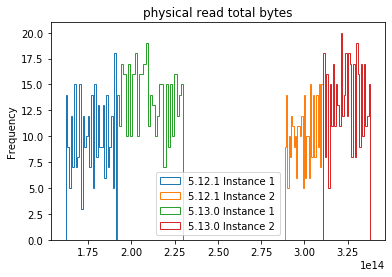
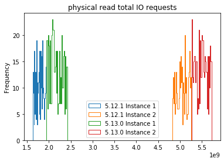

Welcome to User I/O Degradation after Release Change’s documentation!¶
About the Project¶
After database deployment of a new production release, performance monitoring raised the suspicion of a degradation of User I/O. The project’s objective is to confirm or proof wrong the suspicion, adopting appropriate statistical methods.
About the Data¶
The database platform is an Oracle 11g RAC with 2 instances. I compaire 2 metrics from the dynamic performance view DBA_HIST_SYSSTAT:
physical read total I/O request
physical read total I/O bytes
The Results¶
Plots and Mann-Withney U-Test both confirm the User I/O degradation after deployment of the new release, for both metrics. 5.12.1 is the “old” release, 5.13.0 the new release.
 